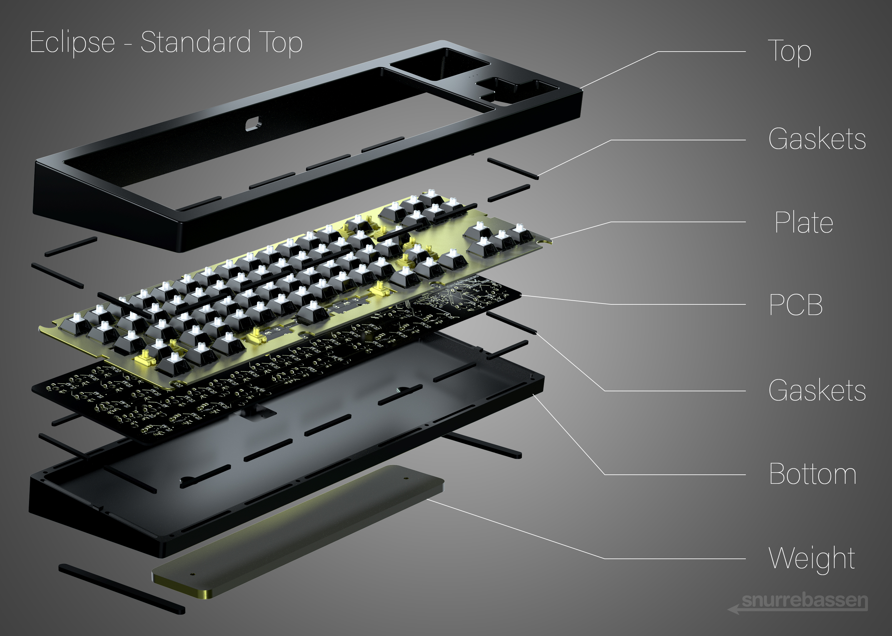
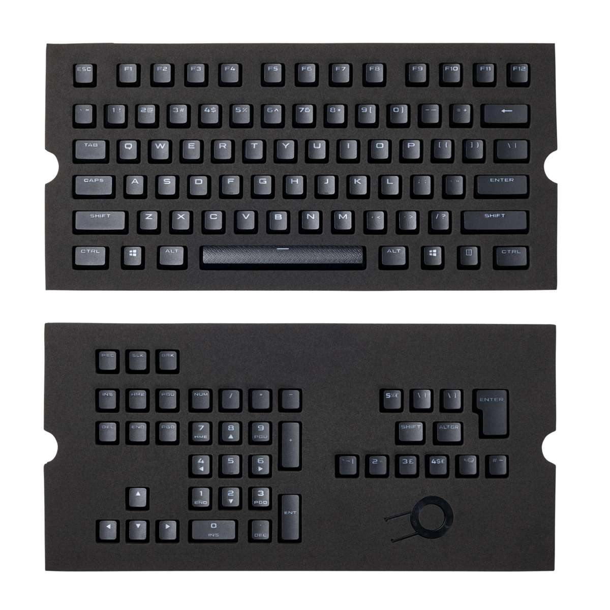
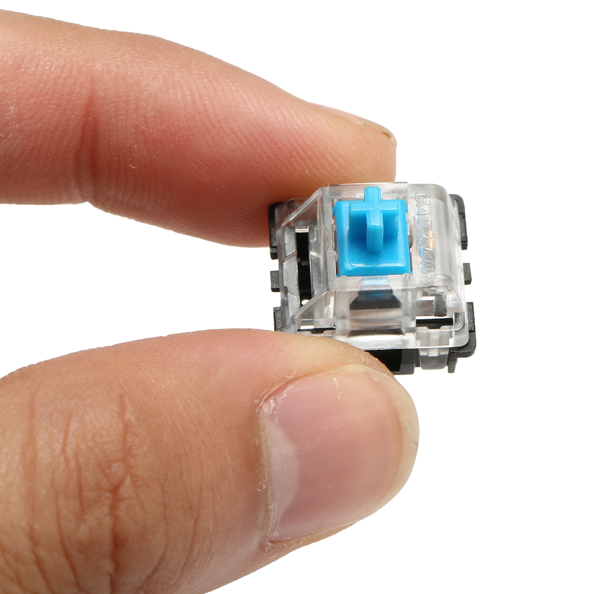
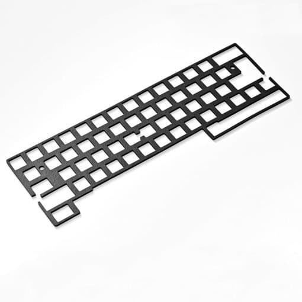
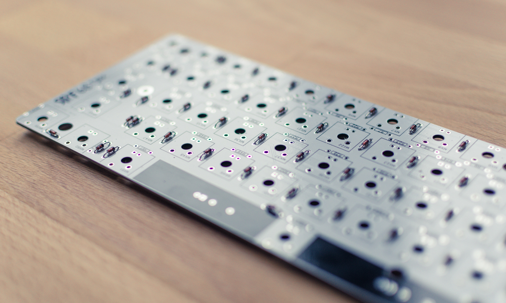
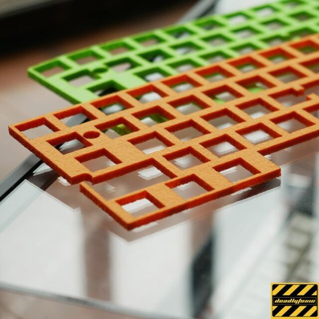
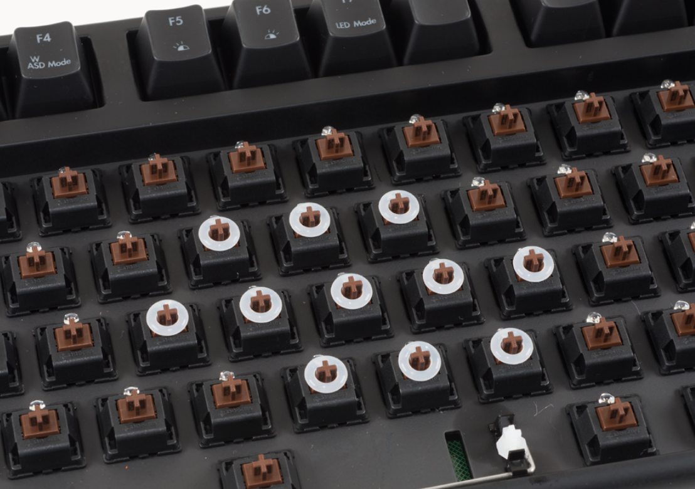

Here are the mechanical keyboard components:
Key Caps
Key caps are the finishing touch to your keyboard. Some keyboards come with stock key caps that look terrific. Most aficionados, on the other hand, go out of their way to embellish their keyboards with elaborate and eye-catching key caps. The reason is straightforward. Choosing and purchasing a key cap set allows one to show one's personality through their keyboard. It's an opportunity to replace that boring-looking stock key caps set with one that "resonates" better with you. Most people do not consider the materials used or the profile of key caps while purchasing them. Such factors are rarely taken into account.
Switches
These switches are in charge of actually registering the input after you hit a key and delivering it to the keyboard's PCB. The instructions are then sent to your computer by this PCB. Switches come in a variety of shapes and sizes. Cherry manufactures the most often used switches. The Cherry MX mechanical switches are among the most popular on the market. However, there are other mechanical switches made by Chinese companies such as Kailh and Outemu that provide excellent value for money. Because Cherry MX switches are notoriously expensive. The most important thing to understand about switches is their various types.
Top & Bottom Case

These switches are in charge of actually registering the input after you hit a key and delivering it to the keyboard's PCB. The instructions are then sent to your computer by this PCB. Switches come in a variety of shapes and sizes. Cherry manufactures the most often used switches. The Cherry MX mechanical switches are among the most popular on the market. However, there are other mechanical switches made by Chinese companies such as Kailh and Outemu that provide excellent value for money. Because Cherry MX switches are notoriously expensive. The most important thing to understand about switches is their various types. T he bottom case of the keyboard is nearly identical to the top case. However, rather than protecting and closing off the keyboard from the top, this part does so from the bottom. The top and bottom work together to close the keyboard.
Plate
The plate serves as an interface between the top casing and the rubber gaskets that separate the switches from the keyboard's internals. The plate's primary function is to keep the keyboard together. Using a plate ensures that the switches in a keyboard are properly aligned, and also helps alleviate the stress on the PCB when typing or playing PC games.
Gaskets
A keyboard function's gasket is similar to any other gasket. The primary goal is to separate the internal environment from the external environment. This means not allowing small dust particles, spilled liquids, or dust into the keyboard in the case of mechanical keyboards. The keyboard's gasket layer protects it from all foreign elements. This could be a single layer or multiple layers that are more expensive. Because of the good isolation provided by gaskets, some well-designed mechanical keyboards are also spill-resistant.
PCB (Printed Circuit Board)
PCB is an abbreviation for Printed Circuit Board. This is essentially where the magic occurs. The PCB is the keyboard's electronic brain. Every key you press sends information to the computer via the PCB. Depending on the sort of mechanical keyboard you purchased, this sophisticated circuit board may differ. However, the primary function remains unchanged. They turn the physical act of pressing a key into an electrical signal that is transmitted to your computer.
Sound Absorbing Foam
The sound-absorbing foam is positioned at the keyboard's base. It should be noted that not all keyboards include sound-absorbing padding. People who prefer quieter mechanical keyboards typically utilize sound-absorbing foam or keyboards with pre-installed sound-absorbing foams. This component of a mechanical keyboard absorbs sound, as the name implies. This aids in the control of the mechanical keyboard's acoustics. Mechanical switches can be quite loud and annoying, especially for people who are not accustomed to such loud typing sounds.
O-Rings
Some Mechanical Keyboards additionally include little rubber rings known as O Rings. These are affixed to the keycaps' bottoms, between the key cap and the mechanical switch. Their primary purpose is to dampen the interaction between the key cap and the mechanical switch. This is due to the fact that the predominant clicking sound in a mechanical keyboard is produced by this interaction. If you wish to lessen the sound of your mechanical keyboard, you can even buy O rings yourself. However, keep in mind that O Rings can only go so far, and if your mechanical switches are in the loudest group, there isn't much you can do except change the switches.